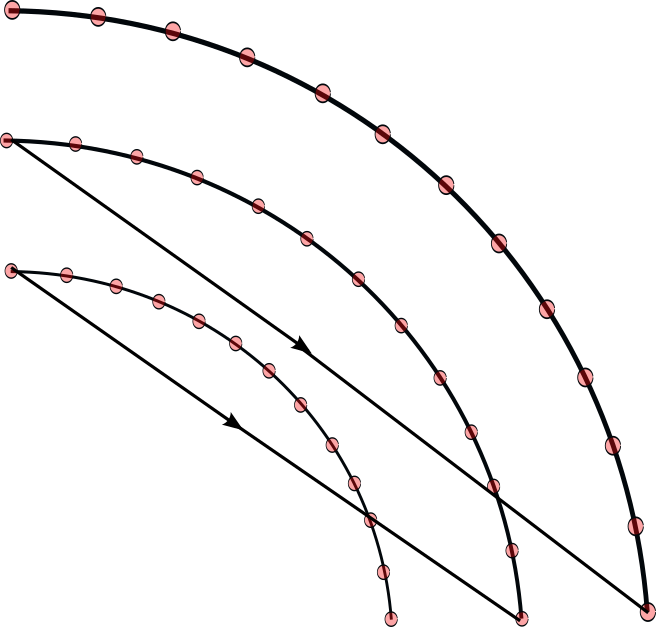
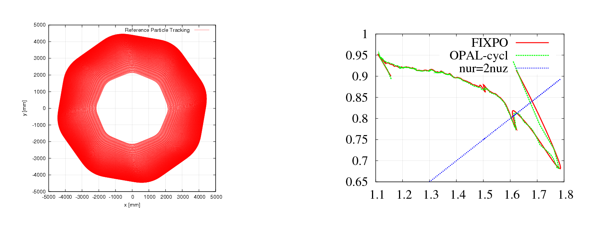

6 OPAL-CYCL
6.1 Introduction
OPAL-CYCL is the cyclotron and FFA flavor of OPAL. It uses time as the independent variable and supports single-particle, tune, and multiparticle tracking in ring-like machines. The legacy manual positions it as the branch for sector cyclotrons, FFAs, and ring studies with acceleration, space charge, and multi-bunch effects.
6.2 Tracking Modes
6.2.1 Single Particle Tracking Mode
This mode follows one reference particle through the cyclotron fields and is primarily used for orbit studies, closed-orbit checks, and setup work.
6.2.2 Tune Calculation Mode
This mode evaluates the transverse tunes around the closed orbit.
6.2.3 Multi-particle Tracking Mode
This is the production mode for bunch tracking with space charge and acceleration.
6.3 Variables in OPAL-CYCL
The cyclotron flavor uses cylindrical and local reference-frame variables, together with specialized initial-distribution conventions. The initial bunch is specified in the local frame attached to the reference trajectory rather than directly in the global cylindrical frame.
6.4 Field Maps
OPAL-CYCL supports several cyclotron-specific median-plane and RF map formats. The field reader is selected by the TYPE parameter of the CYCLOTRON element.
6.4.1 CARBONCYCL Type
If TYPE = CARBONCYCL, the code reads median-plane B_z data in the ordering shown below, with primary direction in azimuth and secondary direction in radius.

CARBONCYCL field ordering.
The source format is a plain B_z table preceded by six header parameters:
r_min [mm]Delta r [mm]theta_min [deg]Delta theta [deg]N_thetaN_r
If Delta r or Delta theta is fractional, the source format allows the negative reciprocal convention used in the legacy manual. For example, Delta theta = 1/3 deg is represented by -3.0.
Example:
3.0e+03
10.0
0.0
-3.0
300
161
1.414e-03 3.743e-03 8.517e-03 1.221e-02 2.296e-02
3.884e-02 5.999e-02 8.580e-02 1.150e-01 1.461e-01
...The number of values per line is arbitrary.
6.4.2 CYCIAE Type
If TYPE = CYCIAE, the program reads a median-plane field extracted from an ANSYS workflow. The original manual includes the APDL post-processing script used to dump the field:
/post1
resume,solu,db
csys,1
nsel,s,loc,x,0
nsel,r,loc,y,0
nsel,r,loc,z,0
PRNSOL,B,COMP
CSYS,1
rsys,1
*do,count,0,200
path,cyc100_Ansys,2,5,45
ppath,1,,0.01*count,0,,1
ppath,2,,0.01*count/sqrt(2),0.01*count/sqrt(2),,1
pdef,bz,b,z
paget,data,table
...
*enddo
finishAs with CARBONCYCL, the generated file must be prefixed with the six header parameters r_min, Delta r, theta_min, Delta theta, N_theta, and N_r.
6.4.3 BANDRF Type
BANDRF allows both magnetic and electric fields to be supplied through the CYCLOTRON element. The magnetic field uses the same median-plane layout as CARBONCYCL. The electric field comes from one or more H5Hut/H5Part blocks generated by the ascii2h5block conversion tool. This is the path used for central-region RF models with more complicated three-dimensional geometry.
6.4.4 RING Type
If TYPE = RING, the program accepts the PSI-style measured field format used for files such as ZYKL9Z.NAR and SO3AV.NAR. Four extra header parameters are prepended:
r_min [mm]Delta r [mm]theta_min [deg]Delta theta [deg]
Example:
1900.0
20.0
0.0
-3.0
LABEL=S03AV
CFELD=FIELD NREC= 141 NPAR= 3
...6.4.5 3D Field Map
It is also possible to load full 3D field maps for cyclotron tracking. In this mode the line is assembled from RINGDEFINITION plus one or more SBEND3D elements, similar to the way OPAL-T uses placed field elements.
ringdef: RINGDEFINITION, HARMONIC_NUMBER=6, LAT_RINIT=2350.0, LAT_PHIINIT=0.0,
LAT_THETAINIT=0.0, BEAM_PHIINIT=0.0, BEAM_PRINIT=0.0,
BEAM_RINIT=2266.0, SYMMETRY=4.0, RFFREQ=0.2;
triplet: SBEND3D, FMAPFN="fdf-tosca-field-map.table", LENGTH_UNITS=10., FIELD_UNITS=-1e-4;
l1: Line = (ringdef, triplet, triplet);The field file itself stores Cartesian positions and fields, while the user supplies LENGTH_UNITS and FIELD_UNITS explicitly. The legacy manual notes that RF cavities are not combined with this mode.
6.4.6 User’s Own Field Map
If none of the built-in readers matches the available data, the source manual explicitly points users to the cyclotron field-read functions as the extension point for custom formats.
6.5 RF Field
6.5.1 Read RF Voltage Profile
Cyclotron cavities can be modeled as infinitely thin gaps with transit-time correction. The two-gap cavity is treated as two single gaps, while the spiral gap cavity was marked as not implemented in the legacy manual.
The gap-voltage profile is read from ASCII:
6
0.00 0.15 2.40
0.20 0.65 2.41
0.40 0.98 0.66
0.60 0.88 -1.59
0.80 0.43 -2.65
1.00 -0.05 -1.71The first line gives the number of sample points. The remaining columns are normalized gap position, normalized voltage, and derivative.
6.5.2 Read 3D RF Field Map
For TYPE = BANDRF, the RF field is read from H5Hut/H5Part files produced by ascii2h5block. The original manual documents the conversion command as
ascii2h5block efield.txt hfield.txt ehfoutThe ASCII inputs begin with grid dimensions, followed by Cartesian coordinates and field components:
101 101 11
-0.110000 -0.018000 -0.006000 37.341814 226.620820 -319049.189111
-0.109200 -0.018000 -0.006000 56.839707 209.995240 303511.031113
...
6.6 Particle Tracking and Acceleration
OPAL-CYCL uses fourth-order Runge-Kutta and second-order Leap-Frog tracking schemes. In the Runge-Kutta path the external magnetic field is evaluated four times per step. For an arbitrary off-plane point the code first interpolates the median-plane B_z value and then expands the field away from the median plane.
When a particle crosses an RF cavity during a step, the step is split:
- track to the crossing time,
- apply the cavity voltage kick and refresh
betaandgamma, - track the remaining substep.
6.7 Space Charge
OPAL-CYCL uses the same solver family as OPAL-T; see the Field Solver chapter. The usual mode is one space-charge evaluation per time step. The legacy manual also documents an experimental multiple-time-stepping variant that reuses the space-charge solution every Nth step.
6.8 Multi-bunch Mode
The neighboring-bunch model addresses the case where radial turn separation is comparable to bunch size, so inter-bunch space-charge effects matter. The manual describes two working modes:
AUTO: start with a single bunch and inject neighboring bunches only when their effect becomes importantFORCE: start multi-bunch tracking from injection
For multi-bunch space charge, particles are grouped into energy bins. Each bin is Lorentz transformed separately, solved separately, and transformed back so that large inter-turn energy differences do not invalidate the rest-frame approximation.
6.9 Input
All three OPAL-CYCL modes use standard MAD-like input files. Tune calculations require an additional SEO file with rows of
E[MeV] r[mm] P_r[mrad]Example:
72.000 2131.4 -0.240
74.000 2155.1 -0.296
76.000 2179.7 -0.319
...The legacy manual also points to a helper script:
6.10 Output
OPAL-CYCL writes the usual diagnostics plus mode-specific orbit, tune, and field products.
6.10.1 Statistics Output
The .stat file follows the OPAL-T convention but changes the cyclotron coordinate meaning:
z/srefers to the vertical directionycorresponds to the longitudinal or beam-travel direction
Additional cyclotron-specific columns include:
| Name | Units | Meaning |
|---|---|---|
R0_x, R0_y, R0_s |
m |
position of particle ID 0 in serial runs |
P0_x, P0_y, P0_s |
1 |
momentum of particle ID 0 in serial runs |
halo_x, halo_y, halo_z |
1 |
halo diagnostics |
azimuth |
deg |
azimuth in global coordinates |
6.10.2 Single Particle Tracking Output
The code writes orbit and turn-by-turn ASCII diagnostics such as:
<input>-trackOrbit.dat<input>-afterEachTurn.dat<input>-Angle0.dat<input>-Angle1.dat<input>-Angle2.dat
6.10.3 Tune Calculation Output
The tune results are written to tuningresult.
6.10.4 Multi-particle Tracking Output
The bunch output is written to H5Hut/HDF5 and can be analyzed with H5root and related post-processing tools. Central-particle orbit diagnostics are also written in ASCII.
6.10.5 Field Maps
Median-plane maps can be dumped to gnu.out. For CARBONCYCL and BANDRF, the file eb.out stores position, electric field, and magnetic field vectors. DUMPFIELDS and DUMPEMFIELDS can be used to write the external field on a different sampling grid than the original input map.


6.11 Matched Distribution
For matched-distribution studies the user must define a periodic accelerator, its symmetry, and a field map. The distribution is then requested with TYPE = GAUSSMATCHED and normalized emittances:
/*
* specify periodic accelerator
*/
l1 = ...
/*
* try finding a matched distribution
*/
Dist1:DISTRIBUTION, TYPE=GAUSSMATCHED, LINE=l1, FMAPFN=...,
MAGSYM=..., EX = ..., EY = ..., ET = ...;6.11.1 Example
The reference example in the original manual is the PSI Ring Cyclotron at 580 MeV and 2.2 mA. The matched-distribution algorithm computes the covariance matrix in (x, x', y, y', z, delta), while particles are later represented in (x, p_x, y, p_y, z, p_z), so the appropriate transformation is required before comparing rms emittances. The historical extraction study of Gordon and Taivassalo [6] is one of the source references carried with this part of the legacy manual.
Source links preserved from the original manual: